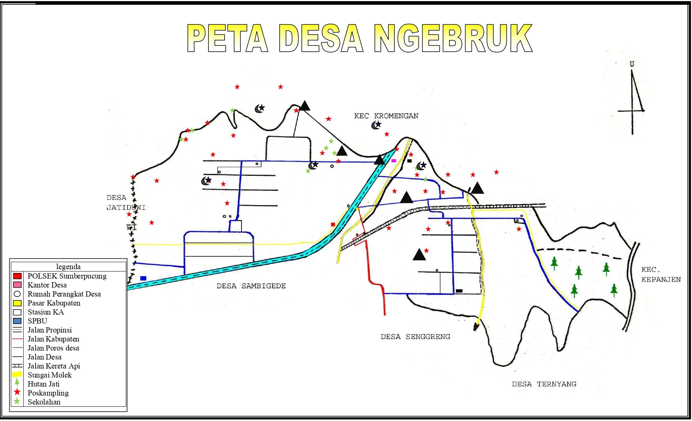

Secara administratif Desa Ngebruk termasuk dalam wilayah Kecamatan Sumberpucung, Kabupaten Malang, terletak di bagian timur, jarak Desa dengan ibu kota Kecamatan 5 Km, dengan ibu kota Kabupaten 25 km, adapun batas adalah sebagai berikut :
- Sebelah Utara : Kecamatan Kromengan
- Sebelah Timur : Kecamatan Kepanjen
- Sebelah Selatan : Desa Ternyang, Senggreng dan Sambigede
- Sebelah Barat : Desa Jatiguwi
Luas wilayah Desa Ngebruk : 505,275 Ha yang di rinci menurut penggunaannya :
- Luas sawah : 214,167 Ha
- Luas tanah tegal : 40,585 Ha
- Luas tanah pemukiman : 109,497 Ha
- Luas hutan jati : 125.250 Ha
- Luas tanah makaman : 1,050 Ha
- Luas tanah lain-lain : 14,276 Ha